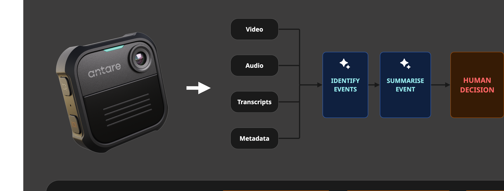
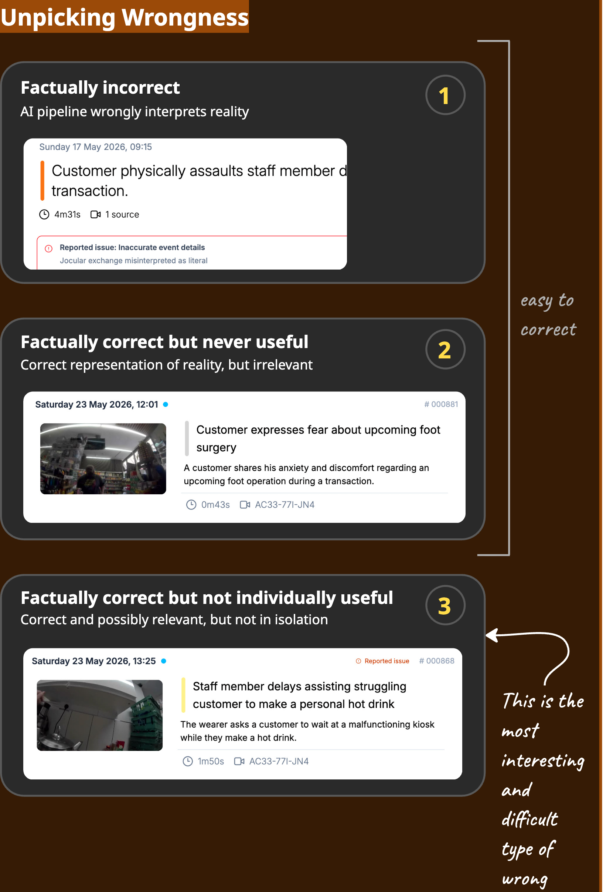
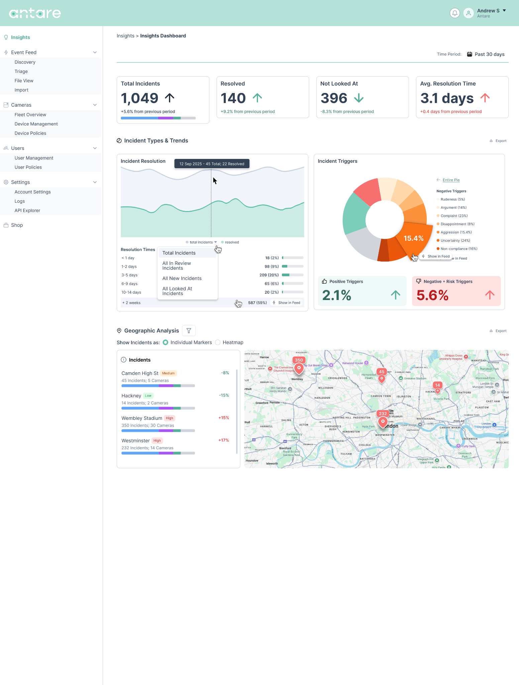
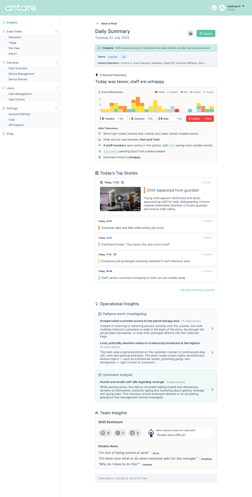

Visual investigation
When AI sees everything, who decides what matters?
Inside Antare's body-worn camera platform — a design story about trust, volume, and the cost of visibility.
Chapter 1
The feed worked perfectly
It summarised incidents accurately. Users trusted the AI. And yet. Something was structurally wrong — not with the model, but with what we were asking people to look at.
Chapter 2
The math changed
Five clips per camera, per day. Two hundred always-on devices. Every day. The pipeline from sensor to human decision-maker was never designed for this throughput.

Digital evidence management systems default to datagrids. Rows, columns, filters. Antare built a competitive one and still found it the wrong genre.


Chapter 3
From spreadsheet to feed
The pivot was not incremental. A social rhythm for operational video — scroll, scan, triage. Event cards as contracts: every field implies an action.


Two feeds for the same organisation: chronological for audit, priority for triage. Synthetic data — actors, office CCTV — made it look great. Then production data arrived.


Chapter 4
Production broke the demo
Real cameras. Real warehouses. Real fatigue alerts beside faulty-product detections beside security patterns. The feed became noise.
Live feed
"It's overwhelming."
Research surfaced three types of wrong: false positives, true-but-trivial, and true-and-important lost in volume.

Visibility creates obligation.
Chapter 5
The feed shrinks; the product expands
Dashboards for patterns. Summaries for the day. The feed became a pointer, not a warehouse.

